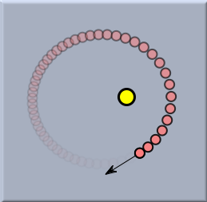
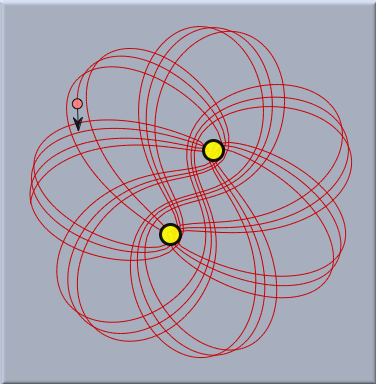
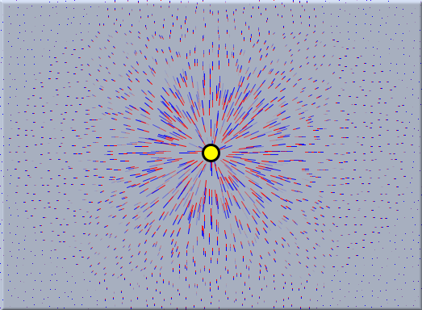
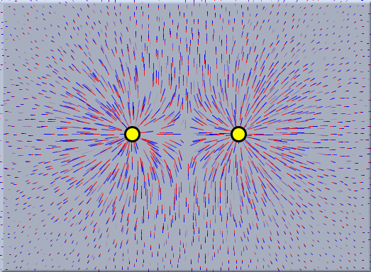
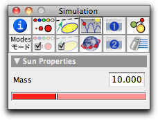

Sun
While the
Gravity mode models a constant gravity field that resembles the situation on Earth's surface, the "sun" mode models a central force field that resembles the situation in space. Its gravity field is modeled to simulate the force field of a pointlike mass. This mass is simply added as a usual geometric point in the
Add a Point mode. Unlike a free mass, such a sun will not move during a simulation. It only exerts a force on each free mass. The force is bigger for masses that are closer to the sun. The exact relation between the distance
dist, the masses involved, and the force is described by the following equation (this is in essence Newton's law of gravity):
|
force = sunmass * mass / dist²
|
Free masses with an initial velocity will move in an elliptical, parabolic, or hyperbolic path if they are under the force of a sun. In
CindyLab such a situation can be constructed and simulated with a handful of mouse clicks (drawing a sun, drawing a mass with velocity, and starting the animation). The picture below shows the result of such a situation.
 |
| A planet orbiting a sun |
The situation will become even more interesting if two suns are present. The picture below shows a recorded trace of a planet in the combined force field of two suns.
 |
| One planet and two suns |
The following two images give an impression of the force field that is caused by one or by two suns to a generic mass. The pictures were generated by the
drawforces() statement of
CindyScript.
 | |
 |
Force field of one sun
| |
Force field of two suns
|
Inspecting Suns
A sun has one item that can be changed by the inspector: its initial mass. By default this mass is set to be 10, which is ten times the mass of a default mass.
A
CindyLab gravity is equipped with a built-in scaling factor, which is set to a relatively small value. The actual value of the
gravityconstant is calculated as this factor times the length of the gravity arrow in the drawing.
 |
| The sun inspector |
Suns and CindyScript
Like any
CindyLab object, a sun provides several fields that can be read and very often set by
CindyScript. The following list shows the accessible fields for gravity:
| Name | Writeable | Type | Purpose
|
strength | yes | real | scaling factor for the force
|
potential | no | real | the overall potential energy of masses in the sun's gravitational field, defined only up to an additional constant
|
pe | no | real | the overall potential energy of masses in the sun's gravitational field, defined only up to an additional constant
|
simulate | yes | bool | turn on/off simulation for this sun
|